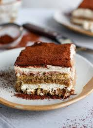

Ingredients
- 3 large eggs
- 1 cup espresso or strong coffee, cooled
- 1/2 cup sugar
- 2 Tbsp. cognac or brandy
- 8 oz. Mascarpone
- 2 Tbsp. cocoa
- 10 ladyfingers
Description
A creamy dessert of espresso-soaked ladyfingers surrounded by lightly sweetened whipped cream and a rich mascarpone. The top of this tiramisu is dusted with cocoa powder for a flavorful finish. Decadent and savory, this dessert will surely satisfy you.
Recipe sourced from Alison Roman
Instructions
- Combine 3 egg yolks, 1 Tbsp. espresso, sugar and cognac into large bowl. Beat 2-3 minutes. Add Mascarpone and beat 3-5 minutes until smooth.
- In another bowl, combine 3 egg whites and a pinch of sugar. Beat until stiff peaks form. Gently fold into Mascarpone mixture.
- Quickly dip each ladyfinger into remaining espresso and layer on bottom of small serving dish. Spread Mascarpone mixture and sprinkle with cocoa. Refrigerate at least 1 hour before serving.